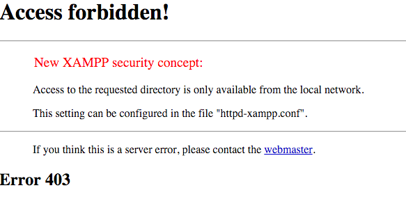

Enable Remote Access to phpMyAdmin
ZAMPP includes phpMyAdmin, an open-source, browser-based tool for managing MySQL/MariaDB database servers. By default, for security reasons, phpMyAdmin is configured to only accept connections from the host on which ZAMPP is installed. Attempting to access phpMyAdmin from any other host will produce the error below:

To enable remote access to phpMyAdmin from other hosts, follow these steps:
-
Edit the apache/conf/extra/httpd-xampp.conf file in your ZAMPP installation directory (usually, C:\xampp).
-
Within this file, find the block below:
<Directory "/xampp/phpMyAdmin"> AllowOverride AuthConfig Require local ...
Update this block and replace Require local with Require all granted, so that it looks like this:
<Directory "/xampp/phpMyAdmin"> AllowOverride AuthConfig Require all granted ...
-
Save the file and restart the Apache server using the ZAMPP control panel.
You should now be able to access phpMyAdmin from other hosts.